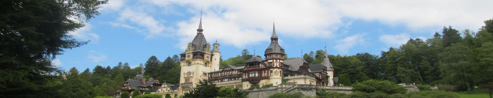
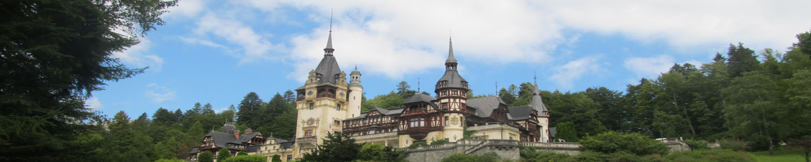

Hang on a second ...


 



My Internship Year

What a year! I will start my story about this amazing year with a short, yet specific exclamation. This was an incredible one year challenge which involved plenty of coding, time planning, but also participation in various meetings and awesome events where I met a lot of great people who I will definitely keep in touch with. I will though start from the beginning…
In my second university year I decided to go for an industrial experience year and hence to move my course from four to five years. After applying to multiple companies and failing somewhere between two and three other assessment centres I also decided to apply to IBM, in the summer of 2016. Initially I had to send a template application which was the standard way for IBM, I had to pass an initial screening and then I was invited to take an online IPAT test – basic numeracy, physics and maths test. So here I was, given a deadline of 3 days to finish this task and I completely forgot about it as this happened during the uni summer break when I was completely disconnected from tests, assignments and others alike. I only took this test in the very last few hours and this happened just because they reminded me about it, by email (I don’t want to imagine what would’ve happened otherwise). After 2 hours of intense thinking, numerous graphs and sheets filled with various numbers I said to myself "I completely failed it". In two days time the result came back positive with them inviting me to a further assessment centre. After the enthusiasm and euphoria cleared out of my head, I confirmed the invitation, so I was stepping into yet another challenge of the IBM admission process. Thus, in a month’s time I had my AC which I successfully passed and then I was placed in the pool of candidates, awaiting for the last interview. After 3 failed phone interviews I eventually got my offer and a place as a Software Developer Intern at IBM Hursley.
After receiving such an offer from an amazingly historic software company, with a rich heritage in machine learning and multiple employees wining the Nobel Prize I was completely proud of myself and euphoric at the idea of working for such a massive and important group. I initially started as a software developer in a back-end squad of AppConnect and then moved to a full stack squad where my list of responsibilities certainly increased along with the various demos I had to be part of or even demonstrate my implementation of different features. Moreover, I was the lead developer in the Extreme Blue internal website development team, organising meetings, taking care of the entire back-end functionality of the platform, recruiting other interns and doing all the admin work related to this project. I also was a helping hand at numerous assessment centres, other giveback projects and together with other few interns we submitted multiple disclosure proposals and participated in the Hursley Lab Hackaton. Along the year, I had multiple DevOps shifts where I was responsible for the status of the live product, dealing with the current issues and then assigning them to the right squad to be dealt with in the shortest time possible.
Regrettably, I will need plenty more pages to describe this year in the smallest detail, so to sum it all up, this was an amazing year which definitely taught me to deal with strict deadlines, improved my soft and professional skills and where I met a lot of valuable people which I would like to thanks for their time involved in mentoring me in the various technical ecosystems. I would also like to say a huge THANKS to my family, especially my fiancée who is always supporting me, but to the great two teachers that helped me get the highest marks in the Romanian national exam and got me started on this path: Daniela Balanescu and Andu Rusu. Thank you all a lot and also thanks to the readers for spending some time on this article, I hope you all enjoyed it!